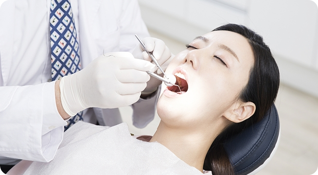

안하면 안되나요? 스케일링
건강 보험에 적용되는 치과 스케일링은 비용 걱정을 덜어 6개월마다 꼬박꼬박 스케일링해 건치인이 되겠다고 다짐할 사람도 적지 않을 것입니다. 흔히 스케일링은 연 1~2회씩 받아야하는 것으로 알고 있지만 실제로 딱 정해진 스케일링 주기는 없습니다.
자주 권유 받는 스케일링
스케일링이란, 치아의 표면에 붙어 있는 치태, 치석, 니코틴이나 외인성 색소 등을 전문적인 방법으로 제거하고 치아표면을 윤택하게 해줌으로써 유해한 세균의 수를 줄여주고 구강을 청결한 상태로 유지시키는 시술입니다.
스케일링은 치주질환이나 충치 등 구강 내 질환을 예방하는 데 그만큼 효과적이기 때문에 치과에서 가장 중요하게 생각하는 치료 중 하나입니다.
하지만 환자들에게는 가장 꺼려지는 치료 중 하나일지도 모릅니다.
관리 정도에 따라 다른 주기
흔히 스케일링은 치과 정기 검진 시기에 맞춰 6개월 또는 1년마다 받아야 하는 것으로 알고 있습니다. 그러나 사람마다 구강을 청결하게 관리하는 정도가 다르기 때문에 스케일링 주기는 개인마다 다릅니다.
예를 들어 양치질을 꼼꼼히 하고 치실과 치간칫솔 등으로 치아를 청결히 관리하면 1년이 지나도 치석이 쎃이지 않습니다. 반대로 양치질이 잘 되지 안호 담배, 커피 등 치아에 해로운 기호식품을 가까이 하면 3개월마다 스케일링이 필요할 수 있습니다.
치석이 잘 쌓이지 않는 사람이 6개월마다 스케일링을 받으면 오히려 치면이 마모되는 역효과가 날 수 있습니다. 연 1~2회라고 하는 것은 스케일링 횟수가 아니라 치과 정기검진 횟수라고 보는 것이 맞습니다.
치아 스케일링 후 주의사항6
- 잇몸에 통증이 조금 있어도 칫솔질은 열심히
- 자극적인 음식, 잠시 유혹 뿌리치기
- 이가 시리다면 시린 이 전용 치약 사용
- 치아 착색을 일으키는 식품은 당분간 Bye!
- 술&담배 OUT!
- 스케일링 후 피가 계속 난다면 치과 방문